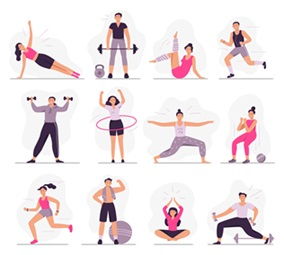
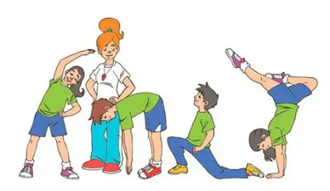
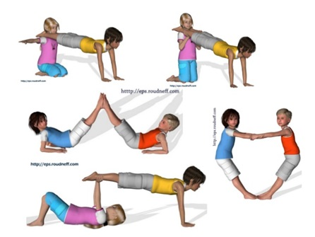
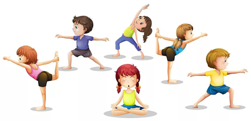

El ejercicio tiene pues dos componentes principales: cardiorespiratorio y musculoesquelético, además de otros como coordinación, equilibrio…, por ello se suele hablar de dos tipos de ejercicio: ejercicios de resistencia cardiorespiratoria (caminar, nadar, bicicleta, baile…) y ejercicios de fuerza y flexibilidad
Sin embargo, las investigaciones han demostrado que es importante realizar los cuatro tipos de ejercicio: resistencia, fortalecimiento, equilibrio y flexibilidad. Cada uno tiene diferentes beneficios.
Y por si no las conoces las vamos a enumerar: resistencia cardiovascular, resistencia muscular, fuerza, flexibilidad, potencia, velocidad, coordinación, agilidad, equilibrio y precisión.
Fortalecimiento (fuerza)
El fortalecimiento muscular es una forma de ejercicio anaeróbico en el que se utiliza la resistencia para fortalecer los músculos y aumentar el aguante físico. Durante el ejercicio anaeróbico, el cuerpo utiliza la energía almacenada en los músculos en vez de utilizar el oxígeno como fuente de energía. El fortalecimiento muscular también puede proteger las articulaciones de las lesiones. La formación de músculo también puede contribuir a un mejor equilibrio y reducir el riesgo de caídas.
Resistencia (aeróbica)
Resistencia es la capacidad física que te permite mantener un esfuerzo determinado durante el mayor tiempo posible. Es la resistencia general, que implica importantes masas musculares y todo el sistema cardiovascular y respiratorio. Importante en todas nuestras actividades.La resistencia es la capacidad de realizar durante determinado tiempo un acto o ejercicio, como por ejemplo: correr o el ciclismo.
Equilibrio
En el ámbito de la actividad física y del deporte, el equilibrio es la "capacidad del hombre de mantener su propio cuerpo, otro cuerpo (u objetos) en una posición controlada y estable, por medio de movimientos compensatorios.Hay dos tipos de equilibrio, el equilibrio en reposo o capacidad para mantener una postura adecuada sin desplazarse y el equilibrio móvil o capacidad para mantener una postura adecuada sin estar totalmente en reposo. El Desarrollo del equilibrio sigue diversas fases y evoluciona paralelo al desarrollo psicomotor.
Flexibilidad (estiramiento)
La flexibilidad es definida como la capacidad de mover una articulación, o una serie de articulaciones, con fluidez a través de la amplitud de movimiento completa sin causar una lesión. La realización estructurada de programas de flexibilidad es una práctica común en el ámbito clínico y físico-deportivo.Flexibilidad activa: capacidad de mover una articulación o músculo mediante la contracción del músculo opuesto. Flexibilidad pasiva: capacidad de mover una articulación o músculo con ayuda externa. Flexibilidad global: capacidad de mover todo el cuerpo a través de un rango completo de movimiento.

Composición corporal
La composición corporal es, como hemos visto, la relación entre esqueleto, músculo y tejido graso. Pesar más o menos será secundario siempre que la relación entre esos tres elementos y la distribución y porcentaje de la masa magra y la masa grasa sean las adecuadas para cada deporte.Conclusiones. La actividad física controlada mejoró la composición corporal de este grupo de mujeres al disminuir los depósitos de grasa y aumentar la masa corporal magra.
